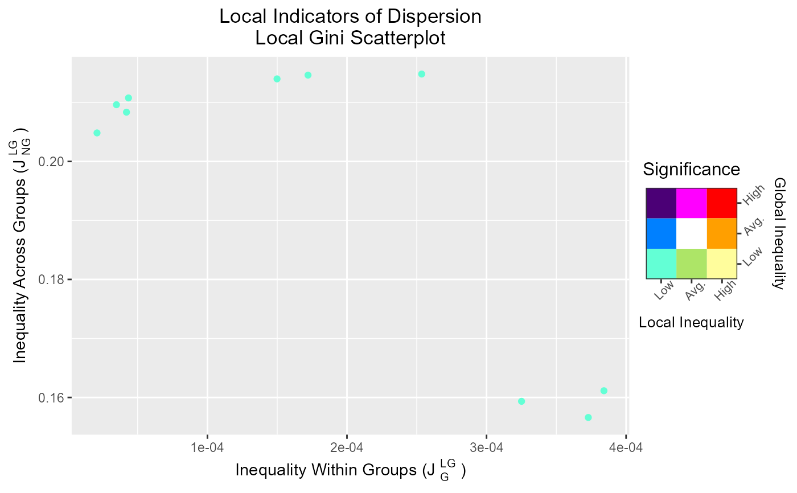

scatterLID.RdPlot the local group and non-group components of a local indicator of dispersion, colored by their inference-based class.
scatterLID(lid, inference, log.scale = FALSE, x.lim = NULL, y.lim = NULL)
colorLID(x = NULL, table = FALSE)The list output of the LID function.
The list output of the inferLID function.
Logical. Should the axes be log-transformed? Default is FALSE.
If TRUE, log transformation is log(1+x,10).
One of NULL to determine the x-range automatically (the default),
a numeric vector of length two providing the x boundaries, or a function that accepts
the automatic boundaries and returns new limits (see scale_x_continuous).
One of NULL to determine the y-range automatically (the default),
a numeric vector of length two providing the y boundaries, or a function that accepts
the automatic boundaries and returns new limits (see scale_y_continuous).
A character string or vector containing a LID significance class.
Ignored if table = TRUE.
Logical. Should the function convert character strings of classes
to hex codes of colors (table = FALSE, the default),
or should it return the conversion table itself?
A ggplot object with two elements---the LID Scatter plot and its scale.
colorLID() acts as a function converting class names to the hex codes corresponding
to the colors used by scatterLID when table = FALSE (the default), and
returns the color table itself when table = FALSE.
# Generate dummy observations
x <- runif(10, 1, 100)
# Get distance matrix
dists <- dist(x)
# Get fuzzy weights considering 5 nearest neighbors based on
# inverse square distance
weights <- makeWeights(dists, bw = 5,
mode = 'adaptive', weighting = 'distance',
FUN = function(x) 1/x^2, minval = 0.1,
row.stand = 'fuzzy')
# Obtain the 'local gini' value
lid <- LID(x, w = weights, index = 'gini', type = 'local')
# Infer whether values are significant relative to the spatial distribution
# of the neighbots
inference <- inferLID(lid, w = weights, ntrials = 100, pb = FALSE)
# Plot the inferences
scatterLID(lid, inference)
